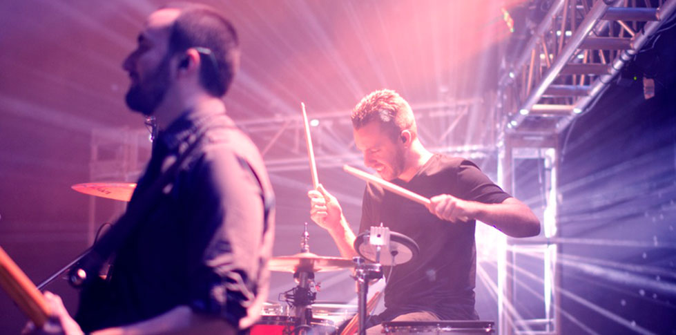
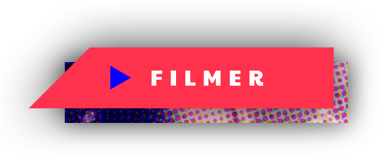
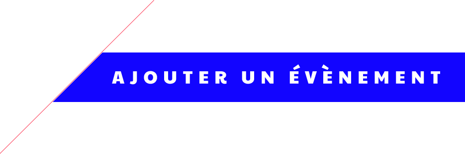

<ion-view view-title="Capture en cours...">
  
  <ion-nav-bar class="bar-stable bar-positive">
    <ion-nav-back-button>
    </ion-nav-back-button>

    <ion-nav-buttons side="left">
      <button class="button button-icon button-clear" menu-toggle="left">
        <span class="one"></span>
        <span class="two"></span>
        <span class="three"></span>
      </button>
    </ion-nav-buttons>
  </ion-nav-bar>

  <ion-content>
    <ul>
      <li ng-repeat="(key, value) in lives" class="ns-list ns-list-live">
        <p class="ns-list-location">{{value.location}}</p>

        <p>
          <span class="ns-list-title">{{value.title}}</span>
          <span class="float-right ns-list-author">@{{value.author}}</span>
        </p>

        

        

        <!-- <button ng-click="capture(key)" class="button button-outline button-assertive">
          <span class="ion-ionic"></span> Filmer
        </button> -->
      </li>
    </ul>
    
    

<!--     <button id="capture" class="button button-outline button-positive">
      Ajouter un événement
    </button> -->

  </ion-content>
</ion-view>
